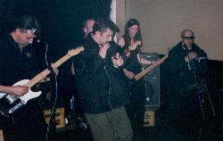
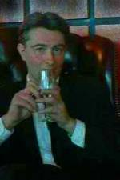
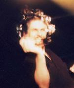
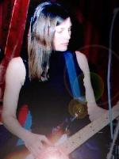
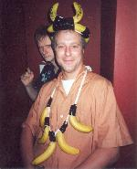
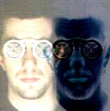
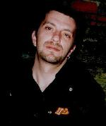
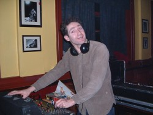

|
|
 |
 |
People
|
|
All the members of Wilson live in Northampton NN1, except for
Mister E. Wilson, who is holed up just across the border in NN3.
I have known every single one of them for at least ten years,
and some members of the band go back a lot further than that.
Every single member of the band has been involved in music for
as long as I can remember. So we have a couple of things in common.
When we are not playing, writing or recording we are hanging
out in each others
company.
Our creative nerve centre is wherever MC Bot's computer is located at the
time. Like the Open University,
we go to it. When our lives are going smooth, MC Bot and Headstone
are working daily on the business of acquiring and mutating sounds,
writing and arranging new tunes and lyrics. Mister E. Wilson
 and Agent Wilson are often in there too, making their contributions.
and Agent Wilson are often in there too, making their contributions.
Our social headquarters are at the Racehorse pub in Abington
Square, where Pete Heyworth the landlord is endlessly patient with us.
Sometimes
he even lets us win the pub quiz. This is not as trivial as you
might imagine. Beer is at stake. Free beer. Cheers, Pete.
We also get to play at the Racehorse a lot. Sometimes we play
in the front bar at Pete's invitation. I enjoy these gigs immensely,
because it's a top challenge to take the pub on a quiet Sunday night and
turn it into a dark and rocking scene. This is largely achieved
with the help of our good friend Johnny P from Rugby. He will
show up with all manner of wild lighting, running movies and
interference all over the set. Johnny has worked with Spacemen
3, Broadcast and the Telescopes. He's a psychedelic master. Once
projected the legend "IN DUB WE TRUST"
across the stage for an hour.
Likewise, these sessions would be infinitely poorer if it wasn't
for the work of Steve Ward of Phoenix Soundworks. Steve is
the evil mastermind behind Fat Controller, who are also very
much sample-based rock, so he soon got the hang of mixing Wilson,

and he's been immeasurably helpful to the band over the last year or
so. The people who turn up and listen do their bit as well. We've
had some top nights down there.
We play in the back room of the Racehorse too. This room is like
the special room. It's quite an operation to put on a show there, but we have done
it ourselves once or twice. More often we have found ourselves
invited to play events back there, often for good old righteous
punk rock people like Stuff the Jubilee or the Anti-Nazi League.
In the back room there is a big old PA, with Skinner at the controls.
Skinner lives around the corner from me. He is involved with
an ancient, enormous German Shepherd and I've seen him playing the penny
whistle with my own eyes. He has a sort of Celtic dub outfit called
Tarantism, coming to a festival
in your town soon.
When we're not in the Racehorse we tend to gather in each others
houses, where we smoke while backgammon and records are played.
Some of Wilson's favourite records lately:
- The Streets - Original Pirate Material
- Queens of the Stone Age - Songs for the Deaf
- New Order - Get Ready
- Asian Dub Foundation - Enemy of the Enemy
- Flaming Lips - Yoshimi & the Pink Robots
- The Congos - Heart of the Congos
- Spacemen 3 - Forged Prescriptions
- Nortec - The Tijuana Sessions Vol 1 & 2
- Bunny Wailer - Blackheart Man
- The Clash - The Story of the Clash
- Trojan Upsetter - Box Set
- Camper Van Beethoven - Box Set
As of October, 2003:
- Ten Foot Ganja Plant - Midnight Landing (ROIR)
- Terry Hall & Mushtaq - The Hours of Two Lights (Honest Jon's Records)
- Kraftwerk - Tour de France Soundtracks (EMI)
- Dizzee Rascal - Boy In Da Corner (XL-Recordings)
- Wepunex Project - South Wales No Frills (Label unknown)
- Killing Joke - New Album (Label unknown)
- Lee Perry - Arkology (Island)
- Badawi - Soldier of Midian (ROIR)
WILSON HEADSTONE
Guitar scientist.
Ringleader, programmer, arranger. Professional musician since
September 1984.
Fender Telecaster, Burns, Yamaha, Hughes & Kettner Tour Reverb.
Committed, tragically, to raising a New Kingdom Egyptian villa
on the site of his Lebanese-style NN1 bolt-hole.
| 
|
AGENT WILSON
Percussionist extra-ordinaire.
Timbales, congas, bongos, daraboukas, blocks and bells, all piled
into the back of a silver Peugeot station wagon and ready to
go. Formerly with Mystic Crew, Stranger Tractors, Sumosonic and
WARM. Has lived his entire life within the NN1 postal area.
| 
|
MISERY WILSON
Bass vibrations.
Third original founder member and officially The Quiet One. Fender
Precision with Marshall amplification. This is her first serious
group, although she used to jam with members of Spacemen 3. Also
worked as a studio engineer. Without Misery we would be nothing.
| 
|
STEVIE G. WILSON
Electric guitarist & monkey god.
Telecaster troublemaker and ambassador for the sport. Also leads
his own band, P-Hex, a gargantuan funk machine and possibly the
only Northampton band ever to play Washington DC go-go music.
Easily the most even-tempered member of the band, Steve has,
nonetheless, been known to manifest as Thanos The Monkey God.
| 
|
MISTER E. WILSON
Sinister electronic shouting man.
Live electronics from this disturbing individual. Paces the Streets
Of Fear at the dark end of the Internet, leaking Wilson propaganda
along the way, and once made a country and western album. Conspiracy
theorist, cabbalist, maker of ridiculous wee noises that slice
through the mix and upset all, Mister E. Wilson is the mother
of all secret weapons.
elsewhere..
|
|
MC BOT
Bullhorn Champagne VST.
Fat Controller are mental,
wrote Kerrang! Magazine. MC Bot was the singer. Has also sung
with President Bush (really), Sumosonic and the Rocking Turks.
With Wilson he does so much more, writing, programming and producing.
Has been known to get beaten up by members of the audience before
going onstage.
| 
|
MC GEORGE
The voice of Istanbul
MC George, who guests with us on Istanbul Connection, has a life
story that has taken him from a playboy lifestyle in sixties
Istanbul to a flat above the Fire Station in downtown NN1. A
true Vegan with a supernatural sense of timing, his eccentric
take on the English language can sometimes obscure the magnitude
of his adventures. In a certain way he functions as the Wilson
guru. Once declared, in the middle of a New Year's Eve party,
"When I was a little boy, they hanged the Prime Minister."
|
|
DJ ANDY SKANK
The reggae revolutionary
Another guest who often adds another dimension to Wilson gigs.
Andy's monthly SKANK night at the Labour Club is a favourite place
for Wilson to hang out. He plays an extraordinary spectrum of
Jamaican music, from ancient sixties ska, through rocksteady
(my personal favourite!) and classic seventies roots rock reggae,
all the way to the mad techno/ska crossovers of today and tomorrow.
|

|
|
Visitors' comments for this page
|
racehorse
fayweldon-at-live.com
- donna bournemouth
23Apr2008 5:11 PM
(16 years 90 days ago)
cant believe im gonna say this but...........i really miss the racehorse. I hear Pete is no longer the landlord,im sure it wont have the same atmosphere without him,good luck to him running his new bar. Botty ive known you since you were in the rocking turks, u havent change at bit, well not in looks, still a handsome devil lol.
|
racehorse
fayweldon-at-.com
- donna bournemouth
23Apr2008 5:10 PM
(16 years 90 days ago)
cant believe im gonna say this but...........i really miss the racehorse. I hear Pete is no longer the landlord,im sure it wont have the same atmosphere without him,good luck to him running his new bar. Botty ive known you since you were in the rocking turks, u havent change at bit, well not in looks, still a handsome devil lol.
|
for Kathy S
marcgerald-at-theagencygroup.com
- marc gerald sunny los angeles
12Jul2006 11:12 AM
(18 years 11 days ago)
Hey Kathy,
I found you after a really long time.
Love to catch up, maybe I can get your email so I can send you a real letter.
All best,
Marc
|
for Kathy S
marcgerald-at-theagencygroup.com
- marc gerald sunny los angeles
12Jul2006 9:59 AM
(18 years 11 days ago)
Hey Kathy,
I found you after a really long time.
Love to catch up, maybe I can get your email so I can send you a real letter.
All best,
Marc
|
cheers
lahtzu-at-yahoo.com
- Hal North Carolina
16Jun2006 9:05 PM
(18 years 37 days ago)
well hello there....
-Hal
|
easy...
headstone
- NN1
16Aug2005 7:28 PM
(18 years 341 days ago)
What did Matt ever do to you? Leave him be, why don't you?
|
Matt Clayson
HerbertScrackle-at-thequeenschicken.co.uk
- Northampton NN1
15Aug2005 8:47 AM
(18 years 342 days ago)
Do any of you lot know a bloke called Matt Clayson, he used to play in a band called Jr Loaded and he works in a music shop, if so show how much Wilson loves its fans by kicking his FUCKING HEAD IN, he is a truly horable individual and a fucking poser to boot.
|
Msg for Bot
info-at-soundsounds.com
- Tarqs
13May2004 10:30 AM
(20 years 71 days ago)
Magnum !!!
|
blimey
hawkertony-at-hotmail.com
- tony
10Mar2004 8:57 AM
(20 years 135 days ago)
was only looking for the address of my ex-company (I used to work [briefly]with, erm, Misery!).. good to know that there is life in Northampton which is otherwise the arse end of the world.
Tony
|
Alpha Beta California
Spacepointmango-at-yahoo.com
- Snoqualmie WA U.S. of A
28Sep2003 1:37 AM
(20 years 299 days ago)
I like X, Young and Zevon.
TAOjones
|
Never
mpckwd-at-aol.com
- Cardiff
24Sep2003 2:39 PM
(20 years 303 days ago)
What, a half good band from Northampton. Impossible shirley!
Packwood
|
nice gig
explosivepants-at-Hotmail.com
- The Ambience Brothers
11Jun2003 4:25 PM
(21 years 43 days ago)
hey,
just a quick message to say great gig last night, hope to see you soon,
Shane
|
Travel in style
echochamber-at-popstar.com
- Ben, LS3
8Jun2003 5:22 AM
(21 years 46 days ago)
Why not arrive at your next gig in that black helicopter you've always wanted?
http://www.eckhel.com/
|
For fuck's sake
guslevy-at-kerosenebomb.com
- Gus Levy
31May2003 3:49 PM
(21 years 54 days ago)
I am looking for the Fall and found this by mistake.
|
|
|

{kind=link}
{kind=link}
{kind=link}
{kind=link}
{kind=link}
{kind=link}
{kind=link}
{kind=link}
{kind=link}